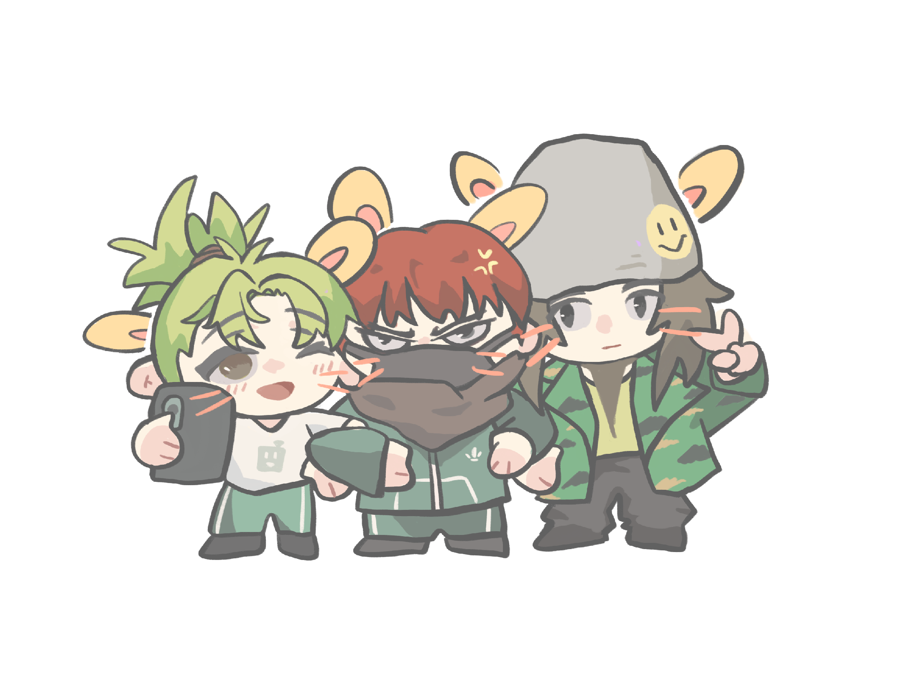
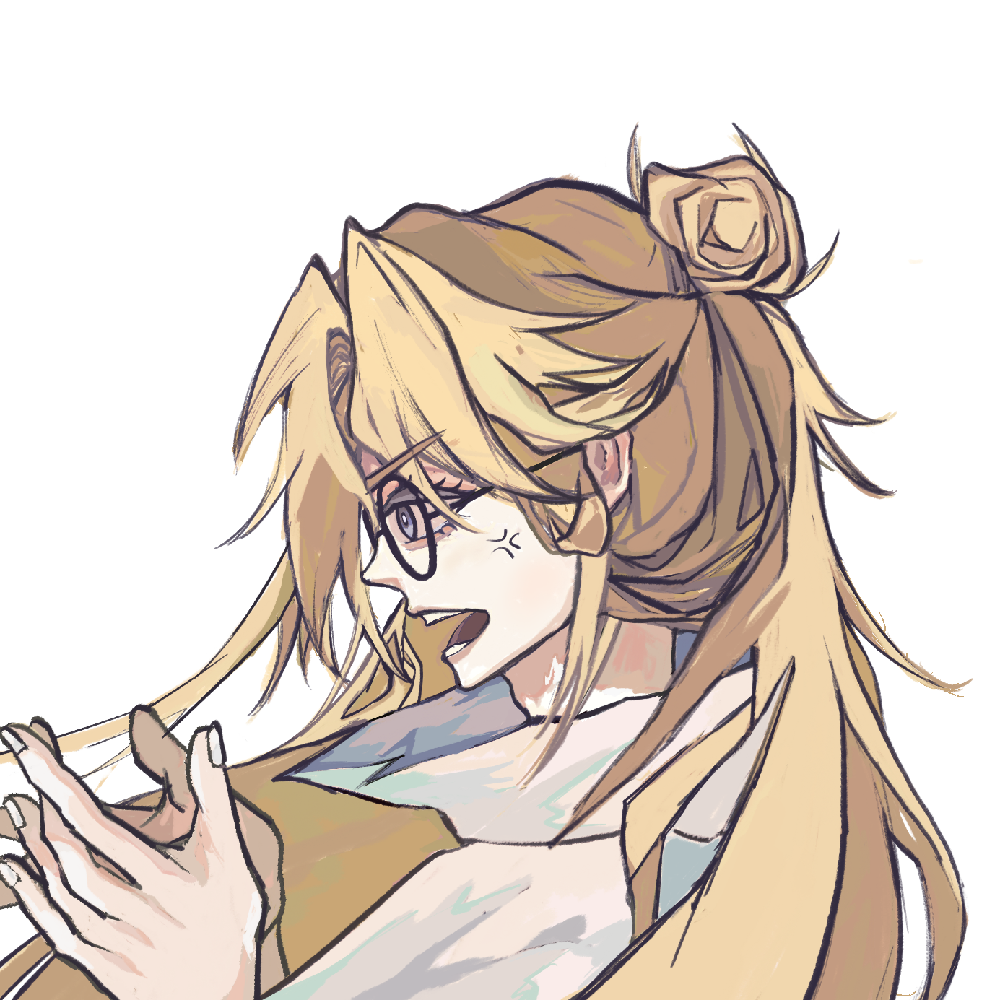
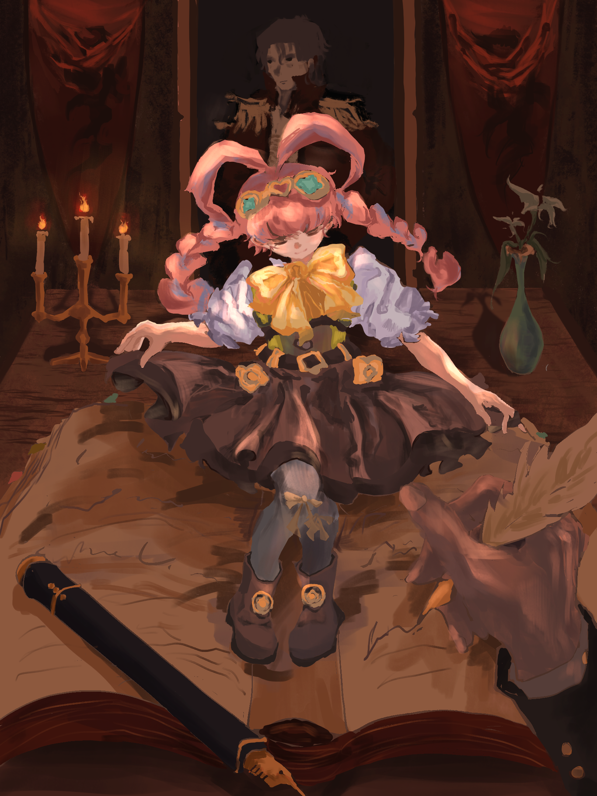
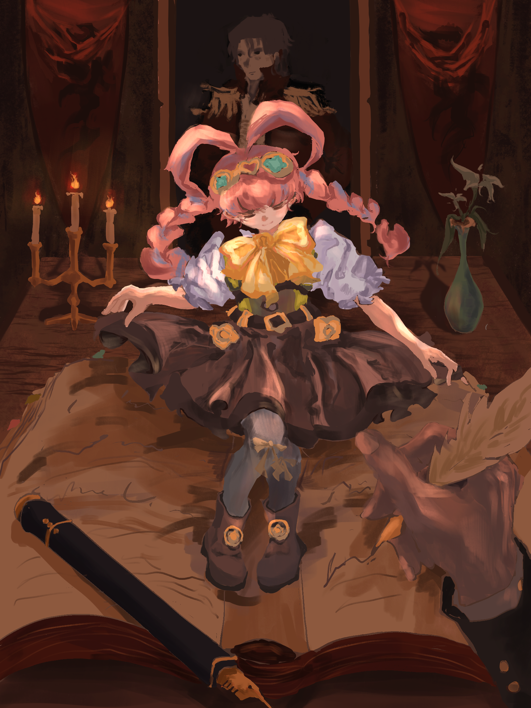
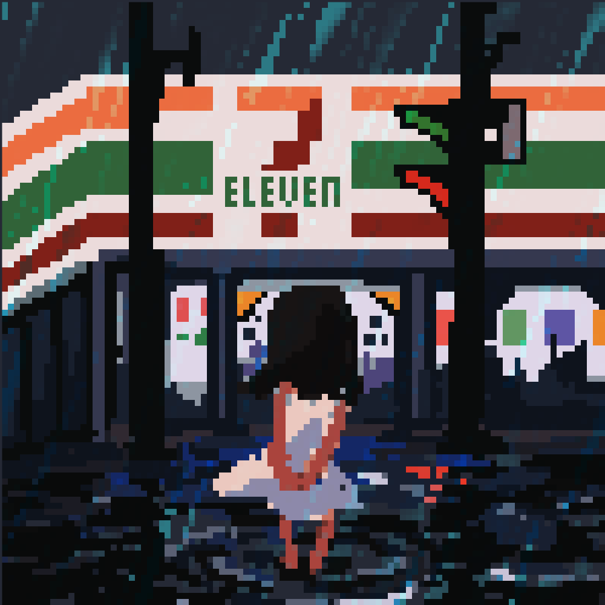
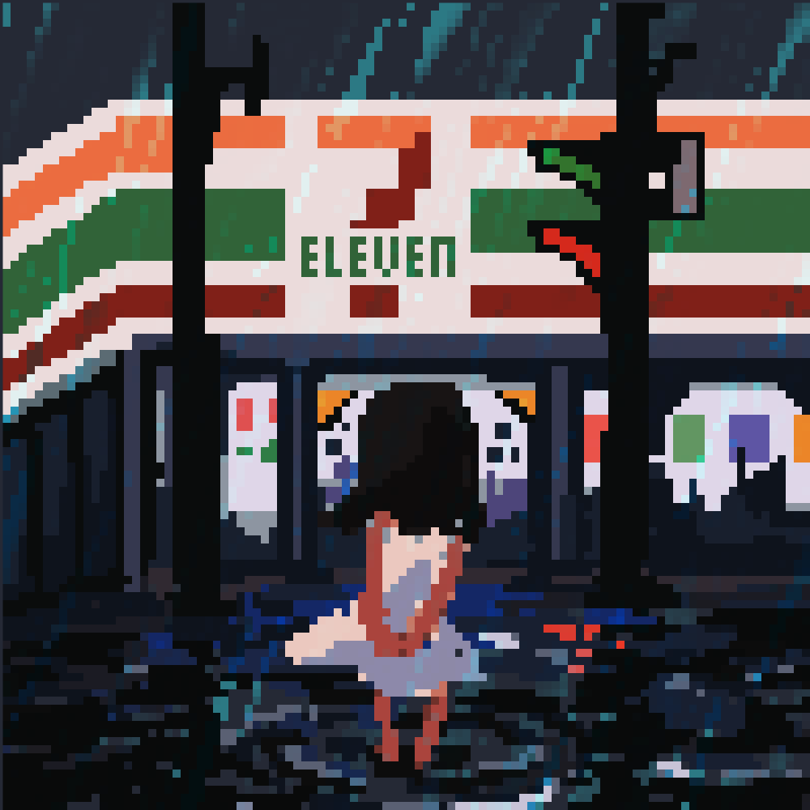
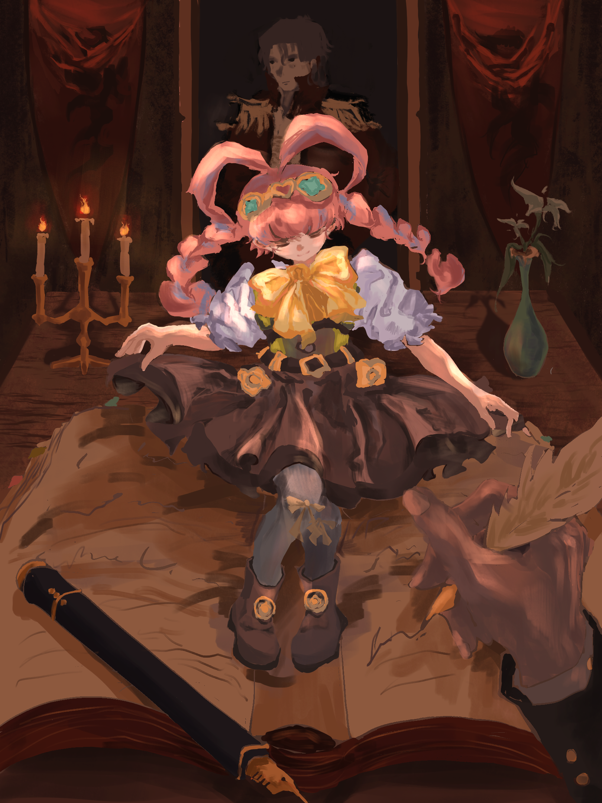
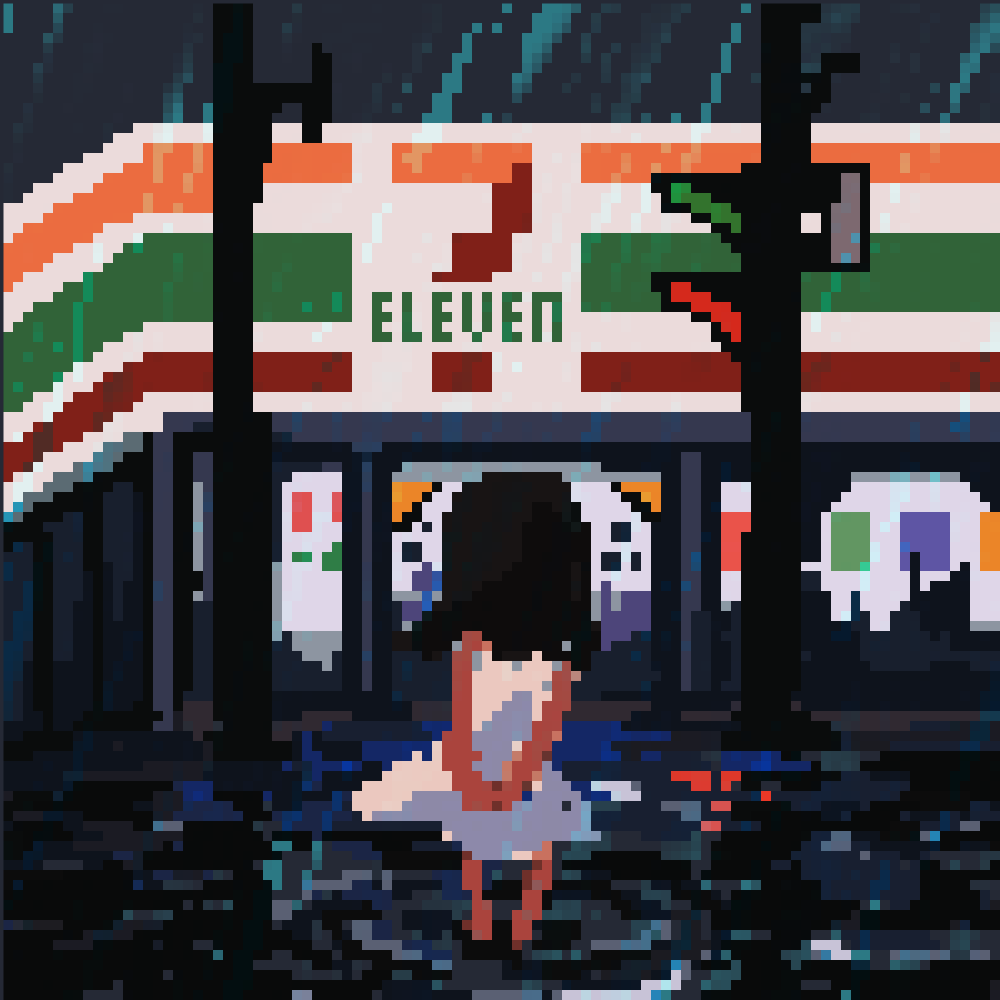

My Gallery
 
 


 

A sophomore at Carnegie Mellon University, majoring in information systems.
Currently in Game Creation Societ (GCS) and Japanese Student Association (JSA).
Enjoy playing video games and fan arts creation.

